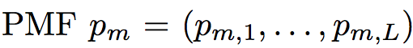
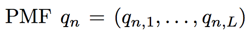
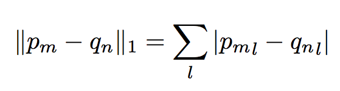
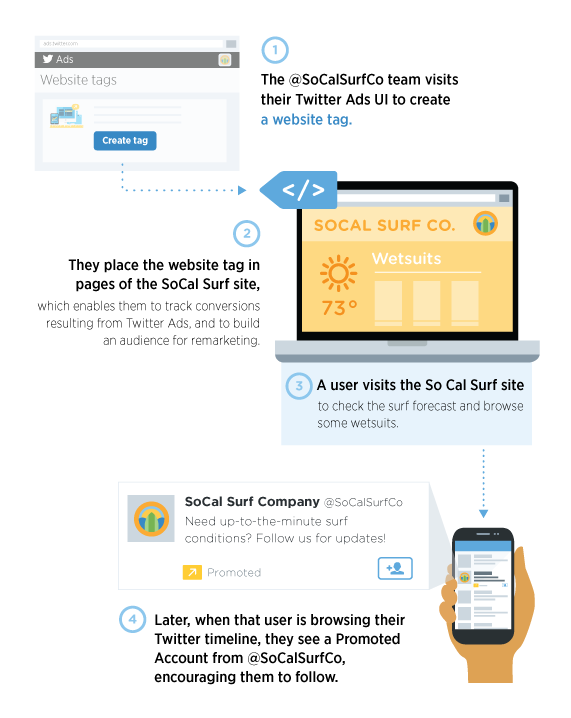

Silvia Puglisi, David Rebollo-Monedero and Jordi Forné
Department of Telematics Engineering
Universitat Politecnica de Catalunya
Med Hoc Net 2016
When users surf the web a network of personalisation services tracks their preferences by following their browsing habits.
These services combine information from different sources:
Online profiling often means collecting enough features to distinguish an individual among a group of candidates.
Knowing certain facts about an individual allows the add network (or an attacker) to verify assumptions and make predictions.
We model the user’s activity as series of events belonging to a certain identity.
Each event is a document containing different information.
Each document can be seen as a hypermedia document i.e. an object possibly containing graphics, audio, video, plain text and hyperlinks.
We call the hyperlinks selectors and we use these to build the connections between documents.
We aggregate keywords each time the user creates a new event by visiting a different url.
These keywords constitute the user profile of interests.
With this model we assume that a particular category is weighted according to the number of times this has been counted in the user profile.
We define the profile of a user um as the Probability Mass Function:
A histogram of relative frequencies of tags across the set of tag categories T.
The profile of an ad is defined as the PMF:
Where q_{n,l} is the percentage of tags belonging to the category l which have been assigned to this specific advertising item.
When a user visits a web page, the browser sends an http request to the server to request a representation of the resource described through the url.
The html document contains a number of links to other resources, such as JavaScript code, CSS, videos, audios or images. Some of these can be stored on the same domain as the requested page, some may be requested to a third party service.
Trackers on web pages make third-party http requests to advertising services. These return ads content tailored to the user web history or expressed preferences.
Advertising services work in a feedback loop. Services record users' profiles and adapt the returned advertising.
We consider the third party advertising network to operate like a recommendation system suggesting products or services based on the users' preferences.
We assume that the ad server suggest advertising based on a measure of similarity.
We use the 1 − norm and the 2 - norm between the user and the advertisting profile as a measurement of how the advertising network is tracking the user profile:

“https://blog.twitter.com/2014/introducing-the-website-tag-for-remarketing”
Web tracking happens very quickly in a few subsequent visits to websites in a large advertising network.
By exploiting links between pages and trackers we are able to capture both connections between entities as weel as individual events, features and metrics.
We would like to introduce a full set of metrics to measure the distance between the advertising and the user's profile:
We are interested in measuring how social networks sharing buttons and/or commenting services, included on websites, are able to track users even when these have not signed in with their account.
We are interested to measure how Privacy Enhancing Techniques affect advertising networks.
"I do not want to live in a world where everything I do and say is recorded. That is not something I am willing to support or live under."
Edward Snowden